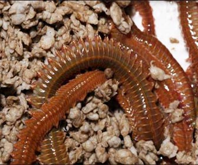

La pesca es un deporte recreativo al aire libre que tiene más valor de lo que aparenta.

La pesca no solo te ayuda a vivir una vida más sana, feliz y relajada, sino que también te mantiene en buena forma física.

La pesca proporciona una conexión con todo el mundo vivo. Te da la oportunidad de sumergirte por completo, llevándote a ti mismo en una buena dirección.
Temporada de pejerrey...
Este martes 1 de diciembre dio por culminada la veda del pejerrey y, con ello, ya tenemos la posibilidad de pescarlo todos los días de la semana. Recorremos una decena de espejos de agua bonaerenses con las novedades de las últimas semanas. Contactos y el pique. El Río de la Plata, resulta ideal para capturar pejerreyes durante la temporada invernal que se extiende desde abril hasta septiembre. La pesca de pejerreyes en el estuario es algo soñado por los amantes de la especie, debido a los grandes ejemplares que se obtienen. El Río de la Plata, resulta ideal para capturar pejerreyes durante la temporada invernal que se extiende desde abril hasta septiembre. La pesca de pejerreyes en el estuario es algo soñado por los amantes de la especie, debido a los grandes ejemplares que se obtienen
Chasicó Entre las lagunas más conocidas y visitadas en el circuito pesqueril, arrancamos por un clásico que vuelve tras una larga abstinencia, hablamos de laguna Chasicó, donde vuelven a trabajar tras más de 8 meses de parate. El "Ruso" (Tel.:2914136793), popular guía del espejo, pone en marcha los motores y, cuando usted esté leyendo esta nota, ya estará clavando con distintos pescadores los primeros pejerreyes post pandemia. Hace unos días, saliendo con fines sustentables, modalidad que estaba permitida, metieron muy buena pesca con aparejos de flote y paternoster, con pejes de todo tamaño, lo que anticipa buenos meses de pesca, a pescar del calor. Salada Grande y Cuero de Zorro Fueron las más visitadas, sin dudas, con la habilitación de la pesca. En Madariaga, la pesca no estuvo fácil las últimas semanas, y mucho menos este "finde", donde hubo que trabajar mucho para acercarse a cubrir la cuota. Ya no sorprenden las capturas que superan el kilo holgadamente, pero el calor, lo activas que están tarariras, bagres y dientudos, hacen que la pesca de "Flechas de Plata" sea más difícil. José Vargas (Tel.: 2267-527404), guía del ámbito, nos contaba que tuvo que batallar bastante pero hubo días donde se logró el objetivo.
Sauce Grande Monte Hermoso, a pesar de la distancia con CABA, es otro punto pesquero que se tiene muy en cuenta. Daniel Sframelli, referente en la zona, nos contaba días atrás que la pesca es buena, con ejemplares de 30 a 35 cm, y sorpresas de 40 a 42 cm. Hay que entrar bien temprano, ya que a mediodía los dientudos se ponen muy molestos, y junto a los bagres, impiden que la pesca de pejerreyes se desarrolle con normalidad. Se debe garetear el centro del espejo, buscar el pique con brazoladas de 20 cm, dependiendo el viento, y con mojarra con carnada, a veces, complementada de un filet de dientudo.

Pescar lisas
Lo primero que hay que resaltar es que la lisa es un pez ideal para los que se dedican a surfcasting de competición. Es una especie que para los torneos de las costas debería ser prioritaria como objetivo por los pescadores, sobre todo por el peso que ofrece en su rango de longitud. Beneficia mucho el modo que se puntúa en los torneos, que proporciona un buen número de puntos por una pieza en relación a la misma medida respecto a otras especies, ya que la lisa es un pez relativamente pesado en su tamaño. Que nadie lo dude, normalmente vale más la pena llevar a la puntuación una única lisa de tamaño bueno que coleccionar varias palometas. Resaltar que si hay estos peces por el entorno son más fáciles de pescar lisas al surfcasting que otros peces, ya que lo devoran todo. Esta devoción por la lisa no excluye que cuando se va por libre con los amigos, se dediquen a otras especies como son la dorada o la lubina; pero no se puede olvidar de la lisa que al no ser capturadas por pescadores profesionales hay muchas más lisas que doradas por ejemplo. Si la lisa fuese un manjar, le pasaría como a otras especies que cada día habría menos y se encontrarían más en las lonjas.
Equipo y material para pescar lisas Si uno se dedica a la pesca surfcasting competición tiene que llevar un equipo de alta competición. Para cañas de surfcasting que llevan tres punteros, emplearemos el híbrido para cuando se va a pescar lisas al surfcasting, ya que amortigua muy bien el tirón y así hay menos posibilidades de escape, una gama de cañas de surfcasting son las de Vercelli, entre otras, unas cañas de media y alta gama para los amantes del surfcasting Pero si hay que tener en cuenta en la pesca de surfcasting es el aparejo, que se monta según este el mar. La línea madre del aparejo suele ser de unos dos metros, a la que se le añade tres gametas largas de 90 cm más o menos especialmente para playas profundas. Para lances más fuertes se reduce las gametas a 50 ó 60 cm, en la parte más fina se acopla una boya. En la playa se utiliza un anzuelo del número 8 para lisas grandes y del nº 10 para lisas de menos de 500 gr.
Los mejores días para pescar a la lisa son los calurosos, con poco viento y baja presión; y todavía mejor si se intenta en las jornadas previas a la posible llegada de fuertes tormentas, mientras el río esté bajo… Si hay viento o si llovió copiosamente, el agua se renueva y la lisa no pica.
Para pescar lisas
El cebo que se asocia al mújol o lisa es la miga de pan. Puede que a corcheo o en el puerto la miga de pan suele funcionar bien, pero para pescar lisas al surfcasting desde playa sin duda alguna el gusano bien encarnado con la ayuda de la aguja se postula como uno de los cebos no sólo más atractivos para la boca sino también más resistente. Hay quien usa también una masa con pan, aceite y sardina que es algo más consistente que la miga de pan seca, pero hay quien se decanta por el gusano norte, sobre todo por que es un cebo que en concreto a la lisa le atrae mucho y tiene mas garantía de éxito. 😉

Pesca del salmón en el mar desde la orilla
Lugar y hora El lugar óptimo para la pesca del salmón en el mar desde la orilla de hilado - las áreas que corresponden a los ríos y arroyos del mar. Es aquí donde el salmón va a desovar, al mismo lugar olía de desove y otros peces migratorios van a la cantidad principal de rayas de alevines y ríos de agua dulce contribuye al desarrollo máximo de la flora y la fauna de la zona costera del mar . La concentración máxima de salmón en el otoño, invierno y primavera hay en estos lugares. También es importante la hora de elegir un lugar de pesca para tener en cuenta la estructura y la topografía de los fondos marinos. Preferiblemente, la presencia de la parte inferior de los depósitos de piedra y rocas grandes como las playas de arena de salmón poco visitada. Sin embargo, muchas áreas marinas costeras completamente desprovistos de piedras, pero los peces allí (aunque en cantidades menores) está presente. El mejor momento para la captura de salmón del Báltico - finales de diciembre - mediados de mayo, el pico de salmón pescado en enero, y la trucha - marzo-abril. Trazada como una serie de explosiones separadas de la actividad de estos peces asociados con el enfoque de los bancos de arena de la orilla del caldo de fusión y el arenque. Morder el salmón detiene casi por completo a mediados de mayo, cuando la costa es adecuado para el desove de aguja, que ocupa toda la costa y obligando a los salmones en profundidad. El desove aguja tiene una duración de casi un mes, por lo que la pesca del salmón hasta mediados de junio, se puede olvidar. De todos modos salmón capturado verano es muy importante. Y la temporada comienza sólo en principios de enero, cuando el desove del salmón, vuelto a pasar de los ríos en el mar y comienza a alimentarse intensamente, la restauración de las fuerzas. Decir que el salmón es mejor toma amaneceres, no del todo bien. No sólo una vez o dos veces sucedió que el gran pez muerda en la tarde, y no tomó más tarde. En invierno empezar a pescar mejor con el almuerzo y continuar hasta la puesta del sol. La descongelación y calentamiento con agua y se puede agarrar la mañana. Si durante el día el pez no muestra actividad, cabe esperar la noche, a menudo salmón procedente de la orilla en la oscuridad cerca cuando él no puede ver donde la cuchara caído. Si bien la pesca en calma o cuando una onda de aproximadamente el mismo.